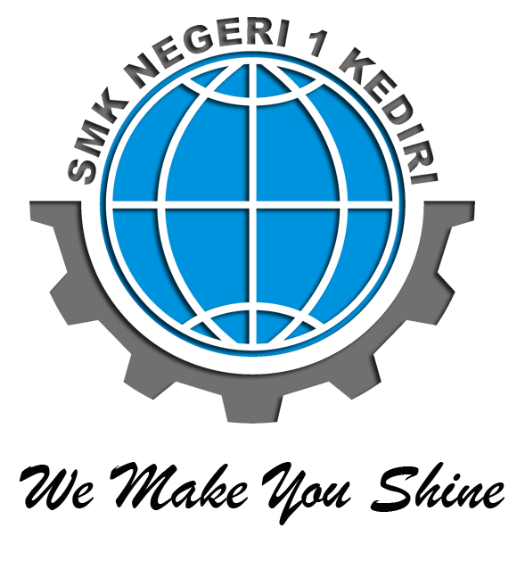
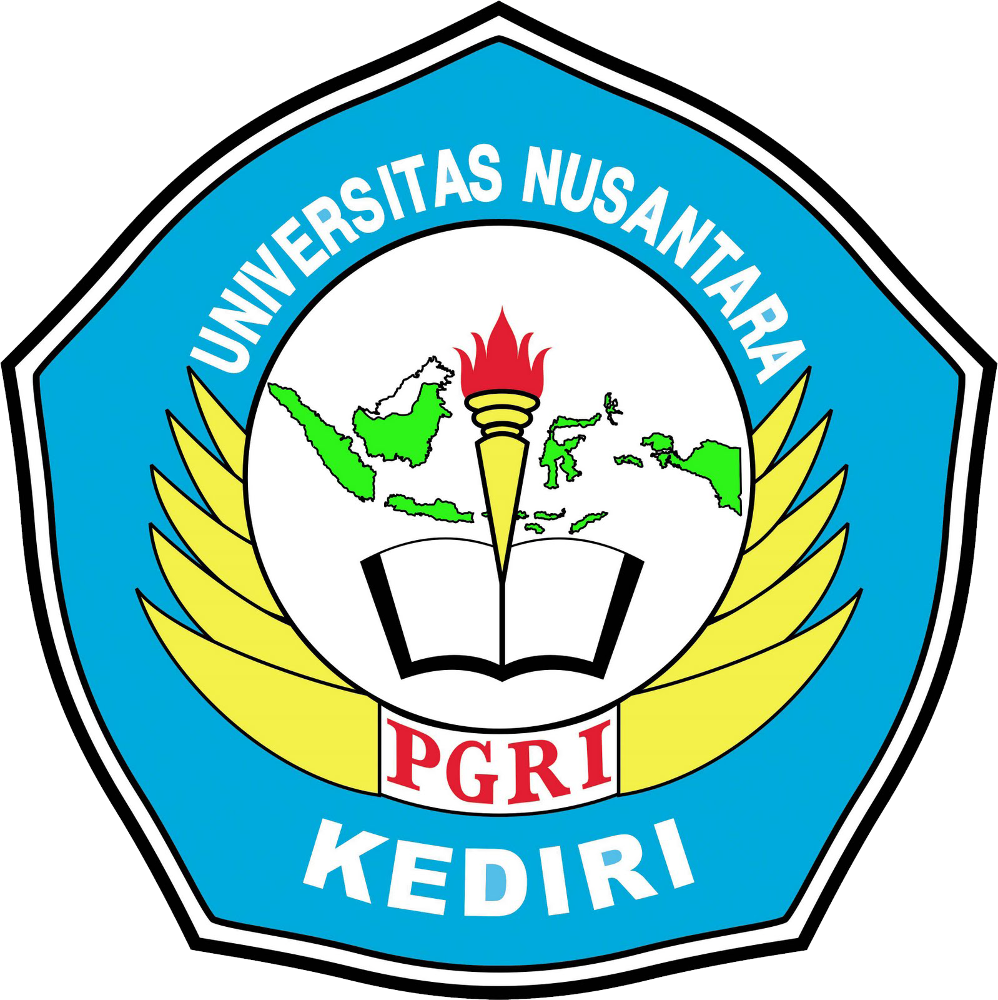
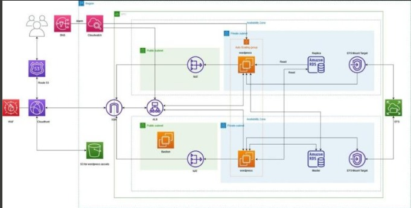

I am a final year student at Universitas Nusantara PGRI Kediri, majoring in Computer Engineering. I
am currently working as a toolman in the Computer and Network Engineering department at SMK Negeri 1
Kediri. I am also developing my own personal social media platform to share my knowledge and passion
for Information Technology. With my educational background and practical experience, I am eager to
apply my skills to real-world projects and make a positive impact in the field of IT. I am looking
for opportunities to expand my knowledge and gain more experience through internships or entry-level
positions in the tech industry
As a Tools Manager at SMK Negeri 1 Kediri, I am responsible for
overseeing the inventory and maintenance of school facilities and infrastructure. This
includes managing and maintaining an inventory of over 500 pieces of equipment and
facilities, and ensuring that all equipment is in good working condition. I also carried out
regular maintenance and repairs, as well as network installations and maintenance of
computer equipment. This experience has given me a strong understanding of facility
management, inventory management and maintenance of computer equipment.
Digitalent X Alibaba Cloud: PROA - Big Data Fundamentals - Batch 3
Alibaba Cloud
Sep 2023 - Present · 1 mo
Currently, I am participating in the ProA program organized by
Alibaba
Cloud, which focuses on fundamental understanding of Big Data. This program is a valuable
opportunity for me to learn how to leverage Big Data products from Alibaba Cloud, including
MaxCompute, DataWorks, EMapReduce, visualization tools, BI Tools, and other Big Data
technologies.
The ProA program at Alibaba Cloud has equipped me with the knowledge
and
skills needed to become an ACA-level Big Data specialist. I am very excited to continue
developing myself in the field of Big Data and contribute to projects that require a deep
understanding of this technology.
I highly appreciate this opportunity and would like to express my
gratitude to Alibaba Cloud for providing this valuable education in Big Data.
Owner
Ikimukti Platform
Feb 2019 - Present (4 years 8 months)
As the owner of Ikimukti.com, I am at the forefront of discovering
new and exciting technology trends. Ikimukti.com is a cutting-edge website dedicated to
providing the latest tech news and comprehensive tutorials, ensuring our audience stays
informed and up-to-date on the latest advancements in technology. Alongside this, we offer
expert IT support and consulting services, empowering individuals to seamlessly integrate
technology into their daily lives and stay ahead in the rapidly evolving digital landscape.
With Ikimukti.com, I have had the opportunity to explore the
limitless possibilities of technology, constantly seeking innovative ways to enrich our
audience's understanding of the digital realm. Our commitment to delivering reliable and
insightful information has established Ikimukti.com as a trusted resource in the tech
community.
Digitalent X Elite Academy: TSA - Cloud Become an AWS Elite Cloud
Engineer Stage 2
Amazon Web Services (AWS)
Jun 2023 - Aug 2023 (3 months)
I'm thrilled to have been accepted into Stage 2 of the Digitalent X
Elite Academy: TSA - Cloud Become an AWS Elite Cloud Engineer program. This stage is all
about preparing for real-world internships and I couldn't be more excited! Over the course
of 6 weeks, I'll be diving into simulations, role plays, soft skill assessments, group
tasks, performance reporting, and live sessions. These activities are specifically designed
to equip me with the expertise needed to excel as a Cloud Consultant.
During the program, I'll have the opportunity to learn from industry
experts and collaborate with fellow talented individuals in the Cloud Computing field. I'll
be focusing on a wide range of essential skills,including designing innovative solutions,
managing cloud infrastructure, conducting user acceptance tests, and effectively handling
incidents. The program, conducted online with the support of AWS and organized by Pusbang
Proserti, Badan Litbang SDM Kominfo, is the perfect platform for me to sharpen my skills and
make significant strides towards becoming an AWS Elite Cloud Engineer.
I'm ready to embrace the challenges that come with managing and
delivering Cloud projects. From onboarding to presenting proposals, I'll be equipped with
the knowledge and hands-on experience necessary to navigate through any obstacles.
Additionally, regular soft skill assessments will ensure that my communication,
collaboration, and problem-solving abilities are at their best.
I'm truly enthusiastic about the possibilities that lie ahead in this
program. With each passing day, I'll be one step closer to becoming a Cloud Consultant who
can make a real impact in the industry. Let the journey begin!
Digitalent X Elite Academy: TSA - Cloud Become an AWS Elite Cloud
Engineer
Amazon Web Services (AWS)
Jan 2023 - Jun 2023 (6 months)
As a Student (Talent Scouting Academy) - Cloud, I am currently
enrolled in the prestigious AWS Elite Cloud Engineer program, where I am developing my
knowledge, skills, and attitude to become a professional Cloud Consultant/Engineer. This
comprehensive Cloud Computing training is designed to equip participants with the necessary
expertise to excel in the field. The program is conducted online, and it is being
facilitated by AWS and organized by Pusbang Proserti, Badan Litbang SDM Kominfo.
Technical Support Technician, MTCNA Mikrotik Academy, TKJ SMKN 1
Kediri
SMK Negeri 1 Kediri
May 2023 - May 2023 (1 month)
As a Technical Support Technician for the MTCNA MikroTik Academy
program at SMKN 1 Kediri during the 2023 academic year, I had the opportunity to work
closely with 65 students in the TJKT department. My primary role was to facilitate and
assess their competency in MikroTik networking technologies.
Throughout the program, I conducted competency assessments to
evaluate the students' understanding and skills in various aspects of MikroTik networking,
such as configuring routers, managing network security, and troubleshooting network issues.
Out of the 65 students, I successfully guided and mentored 59 students to pass the required
grade.
Additionally, I played a crucial role in designing and implementing
hands-on laboratory activities, providing students with practical experience in setting up
and maintaining MikroTik networks. This included overseeing network installations,
configuring network devices, and troubleshooting network connectivity problems.
Working in this role has enhanced my expertise in MikroTik networking
technologies and honed my skills in mentoring and guiding students towards achieving their
goals. It has also strengthened my abilities in designing and delivering effective training
programs, assessing competencies, and fostering a conducive learning environment.
Overall, my experience as a Technical Support Technician for the
MTCNA MikroTik Academy at SMKN 1 Kediri has allowed me to contribute to the development of
aspiring networking professionals and further deepen my knowledge in the field of network
administration and troubleshooting.
Back-End Developer Scholarship Program: DevOps and Back-End
Development Dicoding X AWS
Amazon Web Services (AWS)
Feb 2023 - May 2023 (4 months)
I had the privilege of participating in the esteemed DevOps and
Back-End Developer Scholarship Program, a collaboration between Amazon Web Services (AWS)
and Dicoding. This program was designed to cultivate top-tier digital talents in Indonesia
and equip them with the necessary skills to thrive in a competitive digital landscape.
As a recipient of this scholarship, I immersed myself in the world of
DevOps and Back-End development, benefiting from the invaluable content provided by AWS.
Throughout the program, I underwent comprehensive training in DevOps
Engineering and Back-End Development, acquiring expertise in industry-relevant practices,
tools, and techniques. I gained a deep understanding of DevOps culture, enabling me to
streamline application development processes for faster, more efficient, and secure
outcomes. Additionally, I delved into computer networking principles, from foundational
concepts to the implementation of network services on AWS.
This transformative experience was made possible through the DevOps
and Back-End Developer Scholarship Program, which welcomed participants from diverse
backgrounds across Indonesia. I am immensely grateful for the opportunity to enhance my
skills and contribute to Indonesia's digital transformation.
DBS Foundation Coding Camp 2023 - DevOps Engineer
DBS Bank
Jan 2023 - May 2023 (5 months)
I am proud to have participated in the DBS Foundation Coding Camp
2023 as a DevOps Engineer. This prestigious online training program, initiated by DBS
Foundation, aimed to enhance technological competencies and promote financial and digital
literacy among Indonesians.Through a comprehensive curriculum and scholarship opportunities,
I honed my skills in back-end development, DevOps engineering, coding, problem-solving, and
teamwork. The program's focus on emerging job trends and collaboration with industry
practitioners ensured that I gained globally standardized expertise.I am excited to leverage
this experience to contribute to the advancement of technology and make a positive impact in
the field of DevOps engineering.
Connect with me to learn more about my participation in the DBS
Foundation Coding Camp 2023 and explore potential collaborations in driving technological
innovation and creating a better future.
ASEAN Data Science Explorers 2023 Participant - SAP Analytics Cloud
ASEAN Foundation
Apr 2023 - Apr 2023 (1 month)
I had the privilege of participating in the ASEAN Data Science
Explorers 2023 Enablement Session, specifically in Session 9, where I joined a training
session conducted by Trainer Naqisya Arifani from Pemimpin.id. The focus of the session was
on SAP Analytics Cloud, a powerful data analytics platform.
During the session, I had the opportunity to dive into the realm of
data processing, specifically working with global COVID-19 data from 2020 to 2022. Under the
guidance of Trainer Naqisya Arifani, I learned how to analyze and process the data
effectively. Utilizing SAP Analytics Cloud, I was able to create insightful dashboards that
provided information on COVID-19 trends and predictions.
This experience enhanced my skills in data processing, data
visualization, and utilizing advanced analytics tools. It provided me with a deeper
understanding of the importance of data-driven decision-making and the ability to
communicate complex information through visually engaging dashboards.
Participating in the ASEAN Data Science Explorers 2023 Enablement
Session was an invaluable opportunity that allowed me to expand my knowledge and expertise
in the field of data science and analytics. I look forward to applying these skills in
future projects and contributing to the advancement of data-driven insights in various
domains.
INCO Academy - Work In Tech - Web Programming
INCO Academy
Sep 2022 - Oct 2022 (2 months)
With the support of Google.org, INCO Academy - Work in Tech partnered
with Plan Indonesia to prepare young people in West and East Java for careers in IT. Upon
completion of the program, you will receive a certificate, become more confident, and have
the skills to succeed in the world of technology work.
This program aims to fast track a career in web programming, with the
help of learning with professionals. Learn web and front end basics, provide a user-friendly
interface, and how to troubleshoot using code.
INCO Academy - Work In Tech - IT Support Google
INCO Academy
Jul 2022 - Sep 2022 (3 months)
With the support of Google.org, INCO Academy - Work in Tech partnered
with Plan Indonesia to prepare young people in West and East Java for careers in IT. Upon
completion of the program, you will receive a certificate, become more confident, and have
the skills to succeed in the world of technology work.
This program aims to fast track a career in IT, with a professional
certificate from Google. Learn network and operating system basics, provide end-to-end
customer support, and how to troubleshoot using code.
MBKM - Become a Flutter Master. From zero to hero
Alterra Academy
Jan 2022 - Jul 2022 (7 months)
Become a Flutter Master, From Zero to Hero from Alterra Academy is
one of the Independent Study Programs at Merdeka Campus 2022 which is held for 7 months.
This program helps students learn about mobile development using flutter to validate basic
knowledge of mobile programming and the concepts of rest API and flutter framework.
Administration Department
SMK Negeri 1 Kediri
Mar 2022 - Apr 2022 (2 months)
As a member of the Administration Department at SMK Negeri 1 Kediri,
one of the top schools in East Java, I was responsible for managing the correspondence and
archiving section. This included managing a team of 3 administrative staff and overseeing
the day-to-day operations of the section. One of my major accomplishments was implementing a
new school mail management system, which replaced the manual filing system and improved
efficiency by 80% in archiving work and 3x faster in work process.
My role also included maintaining accurate records, handling
confidential information and providing support to other departments as needed. This
experience has given me a strong understanding of administrative procedures, document
management, and time management.
MBKM - Data and Artificial Intelligence
Microsoft
Aug 2021 - Dec 2021 (5 months)
Data and Artificial Intelligence from Microsoft is one of Independent
Study at Kampus Merdeka Program on 2021 which is held within 4 months. This program helps
college students learn about Azure AI Fundamentals validates foundational knowledge of
machine learning and artificial intelligence concepts and related Microsoft Azure services.
Technician - TUK Seleksi PPPK Guru Pemerintah Provinsi Jawa Timur
SMK Negeri 1 Kediri
Aug 2021 - Sep 2021 (2 months)
As a computer technician and member of the organizing committee for
the PPPK Teacher Selection in East Java Province for 2021, I was responsible for managing
the IT aspect of the selection process. My duties included ensuring that all computer
systems used in the selection process were in good working condition and troubleshooting any
technical issues that arose.
The event was held from Monday to Friday, September 13-17, 2021 at
SMKN 1 Kediri. This experience allowed me to gain valuable knowledge and skills in event
management, computer maintenance and troubleshooting, and demonstrated my ability to work
effectively in a team and coordinate large-scale events.
Computer Technician
Wisma Komputer Kediri
Jun 2018 - Dec 2018 (7 months)
Optimizing client computer network systems, translating client
business requirements into functional designs, and training clients and users with various
computer software and hardware.
Web Programmer
Dinas Arsip dan Perpustakaan Kab. Klaten
Aug 2018 - Nov 2018 (4 months)
Perform integration and migration of digital library web application
data from SLIMS to Inlislite3. Re-developing the digital Archives Information System web
application that is adapted to the form of the Klaten district government structure in
accordance with the archive service work system.
Instructor
Dinas Arsip Dan Perpustakaan Kab. Klaten
Aug 2018 - Nov 2018 (4 months)
Conduct training on the use of computers to the staff of the Klaten
Regency Archives and Library Service. Conduct training on the use of the Inlislite3
application and the use of the SIKD application that has been re-developed.
Education

SMK Negeri 1 Kediri
Jul 2016 - Jun 2019
Network Engginering, Network and System
Administration/Administrator

Universitas Nusantara PGRI Kediri
Jul 2019 - Aug 2023
Bachelor of Engineering in Information Technology, S1-S.Kom
Institut Teknologi Sepuluh Nopember
On going registration
Master of Engineering in Information Technology, S2-M.Kom
Portfolio

Advanced AWS Cloud Solution for PT. ABC News Media WordPress